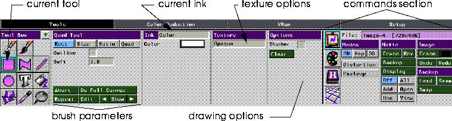
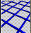

History

The N-Paint Tools menu contains most of the tools you'll use to create and edit full-color images in N-Paint.
This chapter describes the Tools menu in general, as well as the commands section of the Tools menu. You'll use the commands section of the Tools menu to control various N-Paint elements. We'll also cover:
In this Chapter
(CLICK-L) on the Tools button to enter Tools mode and display the N-Paint tools menu. The appearance of this menu varies slightly depending upon whether a brush or a shape tool is currently selected. Figure 3.1 and Figure 3.2 show the configuration of the Tools menu with a brush and a shape tool selected. You can use these figures to orient yourself while you read the following chapters.
Entering Tools Mode
Brushes and Shape tools are described in detail in the next chapter.

The Commands section of the Tools menu contains controls for managing N-Paint elements like images, toolboxes, and palettes. It's also where you'll set various Paint modes. The Commands section is divided into four primary areas; Element Modes, Paint Modes, Matte modes, and Canvas Operations.
The Commands Section
Canvas Mode
Paint Modes
These controls determine the current mode for N -Paint and 3D-Paint (if applicable).
Matte Commands
Any canvas can have a matte associated with it; the matte is saved in the alpha channel of the image, and is used to protect areas of the canvas from being painted on. You control the behavior of any matte associated with an image with the Matte command controls, located in the center of the Commands section of the Tools menu.
Both the canvas and the backup canvas may have mattes associated with them.
Rev
Reverses the matte (causing the protected area to become unprotected and vice-versa).
Backup
Manage the backup up matte. If you (CLICK-L) on Backup, the Matte Backup Operation pop-up menu appears:
Display
(CLICK-L) on the Display button to open a pop-up menu that lets you define the color and opacity of the matte
Matte Display and Use Modes
You can control whether the matte will influence the manner in which your painting is applied to the canvas. You control matte behavior using the six matte mode toggles, located at the bottom of the Matte Modes Section of the menu.
(CLICK-L) on a button to toggle that option. Options which are toggled on are shaded orange, while unselected options are grey or blue. Table 3.2 summarizes each of these commands.
Canvas and Image Operations
The Current Image
The name of the current image, as well as its dimensions in pixels, is displayed on the top row of this section in a magenta edit field (and at the top of the N-Paint Canvas window). (CLICK-L) on the image name to display a pop-up menu of canvas operations.
Loading, manipulating, and saving images is described in detail in "Working with N-Paint Elements," on page 4-2.
Undo & Redo
Enter interactive unpaint mode. Unpaint allows you to undo a limited amount of painting or shape operations. Once in unpaint mode, you can unpaint or repaint recent modifications.
The amount of memory you've set aside for unpaint determines the amount of painting you can undo. See the section "Unpaint Parameters," on page 2-5 for more information.
Backup Canvas Commands
You can store a copy of the current image on the backup canvas. Then you can load the image onto the current canvas, or use it as a safeguard against undesired changes in the current image.
Palette Commands
Manipulating Palettes
Palettes can be saved and manipulated like any other N-Paint element. The name of the current palette is displayed in the magenta current palette filename field atop the color palette itself.
Figure 3.10 Palette Operations pop-up menu.
See the "Working with Palettes and Toolboxes," on page 4-8 for more information about managing palettes.
Paging Controls
A palette may have more than one page of colors; if so, use the paging controls to flip through the pages.
Colors in Palette
The colors on the current page of the selected palette are displayed in the upper right portion of the display.
Current Color
The currently selected color. (CLICK-L) on a color in the palette to make it the current color.
Sliders
The sliders at the bottom of the Color section allow you to specify colors based on the intensity, hue, and/or saturation components of a color. (DRAG-L) on the appropriate slider to change the current color.
Working with Palettes
Use the following mouse clicks to modify a color palette:
Figure 3.11 Generating graduated palettes

Grid Commands
Figure 3.14 Grid Direction pop-up menu
Copyright © 1996, Nichimen Graphics Corporation. All rights reserved.